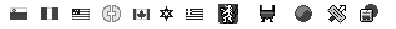

Legacy Document
Important: The information in this document is obsolete and should not be used for new development.
Important: The information in this document is obsolete and should not be used for new development.


Keyboard Icon Family (Types 'kcs#', 'kcs4', 'kcs8')
The keyboard icon family is a set of resources (resource types'kcs#','kcs4', and'kcs8') that specify a family of small icons representing a keyboard layout. They define black-and-white, 4-bit, and 8-bit small color icons, respectively. There is one keyboard icon family per keyboard-layout resource; each of the keyboard icon resources has the same resource ID as the keyboard-layout resource with which it is associated.The Operating System loads keyboard icon resources from the System file only. The ID number of the default keyboard icon family for a script system is specified in the itlbIcon field of the script's international bundle (
'itlb') resource. However, the Operating System ignores this value and instead looks for a keyboard icon family whose resource ID matches the ID of the keyboard-layout resource it is loading. If it cannot find an icon family with that ID, the Operating System loads the default keyboard icon suite (ID = -16491).Some differences exist between the keyboard icon family and the color icon families used elsewhere in the Macintosh Operating System. First, only small icons (16-by-16 pixels) are supplied; there are no large keyboard icons (32-by-32 pixels). Second, the resource type for keyboard small color icons is different from the resource type used elsewhere for small color icons (
'ics#','ics4', and'ics8'). This difference is to avoid resource ID conflicts with those icon resources, because the keyboard color icons may have IDs anywhere in the range 0-32767, and certain negative ranges as well. The keyboard icon types and the equivalent standard color icon types are shown in Table C-8.
Table C-8 Keyboard color icon types and standard icon equivalents Keyboard
icon typeStandard icon
equivalentBit
depth'kcs#' 'ics#' 1 'kcs4' 'ics4' 4 'kcs8' 'ics8' 8
The keyboard icons are used in the Keyboard control panel and in the Keyboard menu when it is displayed. In Macintosh system software versions 7.0 and later, the Keyboard menu always appears when more than one script system is enabled, and may be forced to appear even if only one script system is present (if the
- Note
- If the 4-bit and 8-bit icons (resources
'kcs4'and'kcs8') in your application have exactly the same appearance and colors, then you only need to provide a 4-bit icon.
smfShowIconflag in the Script Manager general flags is set at startup).Figure C-8 Sample keyboard icons
 See the Finder Interface chapter of Inside Macintosh: Macintosh Toolbox Essentials for additional information on color icons and icon families. See also Macintosh Human Interface Guidelines for design suggestions for color icon families.